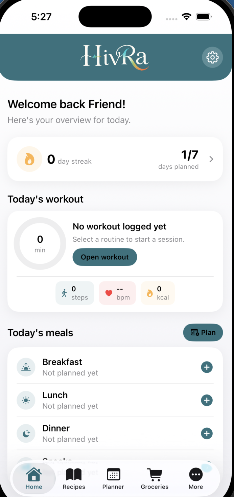

Goals establish the baseline.
Calorie targets, protein needs, schedule, preferences, and habits form the user context that guides the experience.
HivRa connects nutrition, workouts, habits, streak maintenance, accountability, planning, and AI-assisted recommendations into one adaptive wellness operating system.

HivRa started from a simple frustration: wellness routines were spread across too many disconnected tools. Meal planning lived in saved recipes and social media bookmarks. Grocery lists lived in notes apps. Workout tracking relied on spreadsheets or separate fitness platforms. Calories, steps, accountability, and progress tracking each existed in their own isolated systems.
The product idea was to bring those fragmented workflows into one intelligent wellness ecosystem. Over time, HivRa evolved from a meal-planning concept into a broader exploration of AI-assisted workflows, adaptive recommendations, accountability systems, and interconnected product experiences.
Instead of isolated trackers, HivRa treats each wellness action as context for the next decision, allowing meals, movement, habits, streaks, and planning to work together.
Calorie targets, protein needs, schedule, preferences, and habits form the user context that guides the experience.
Heavy workouts, daily movement, progress, and consistency can influence nutrition guidance, protein-aware suggestions, and planning recommendations.
Meal plans can generate grocery workflows, saved recipes can re-enter recommendations, and weekly planning stays connected to goals.
Daily streaks, habit completion, and progress loops create accountability while keeping wellness centered in one connected product experience.
Adaptive nutrition, training context, grocery planning, streak maintenance, habits, and intelligent recommendations designed to work as one system.
AI-powered meal recommendations, personalized calorie guidance, protein-aware suggestions, intelligent meal planning, and recipe saving that feeds back into future decisions.
Track workouts, reps, sets, movement, steps, and progress signals that can influence nutrition and recovery recommendations.
A contextual recommendation engine that adapts around workout intensity, calorie goals, protein intake, meal plans, consistency, and user behavior.
Generate grocery lists from meal plans, organize weekly workflows, and connect planning decisions back to nutrition goals.
Maintain daily wellness streaks across meals, workouts, hydration, and habits with clear consistency signals that encourage users to return without adding friction.
A centralized system for meals, workouts, habits, accountability, planning, and intelligent recommendations, replacing fragmented tools with one connected platform.
The interface prioritizes focused logging, readable streaks, and quick transitions between nutrition, workouts, recipes, and recommendations.
HivRa is built as a modern iOS product with cloud-connected workflows, LLM orchestration, structured data modeling, and product-driven iteration.
AI is treated as a recommendation layer, not a chatbot. Prompts are designed around user goals, recent activity, nutrition state, recipe context, and planning intent.
SwiftUI-driven screens, structured state, reusable product flows, and mobile-first UX decisions support a focused daily wellness experience.
Firebase Authentication and Firestore support user identity, persistent data, sync, and cloud-connected workflows across the product surface.
Render-hosted backend services coordinate AI requests, token-aware prompt construction, structured responses, and integration boundaries.
Meals, workouts, grocery lists, habits, streak records, and user goals are modeled as connected product objects instead of isolated feature silos.
The architecture is shaped around real user workflows: reduce friction, preserve context, make recommendations explainable, and keep daily use efficient.
Hiba Begum is a full-stack software engineer with 4+ years of experience building scalable applications, modern product workflows, and cloud-connected systems.
HivRa began as a product response to fragmented wellness workflows and evolved into an exploration of AI-assisted product engineering, intelligent workflow orchestration, and adaptive wellness experiences.